Side-View Runner: Facing Right and Left
Draw a runner seen from the side, so it clearly faces one way, then flip a copy so it faces the other way. Export both as a sprite sheet for Construct 3.
What you will build
A 32 × 32 runner with a red cap and a yellow backpack. Frame 1 faces right. Frame 2 is the same runner flipped to face left. In a game, the character can turn to face the way it runs.
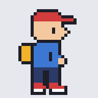
- Learning objective: We are learning to draw a character that faces one way, and flip it to face the other way.
- Prior knowledge: Piskel Lesson 1: Jumping Alien Sprite (Pen, Paint bucket, Duplicate, Export)
Success criteria
- I can set up a 32 × 32 canvas with a grid.
- I can draw a side-view character, using the Stroke tool where colours touch.
- I can duplicate a frame and flip it to face the other way.
- I can save my work and export a 2-frame sprite sheet.
Key vocabulary
| Word | Meaning |
|---|---|
| Side view | Seeing a character from the side, so it faces left or right. |
| Symmetrical | The same on both sides. The Jumping Alien is; the runner is not. |
| Flip horizontally | Turn a picture left to right, like a mirror. |
| Tool | What it is for | Link |
|---|---|---|
| Piskel | Drawing the runner, flipping it and exporting the sprite sheet | piskelapp.com |
- Why a side view? The Jumping Alien faces you and is the same on both sides, so flipping it changes nothing. This runner has a cap brim and nose at the front and a backpack at the back, so you can always tell which way it faces.
- Your runner does not have to match the pictures pixel for pixel. Change the colours or the cap if you like, as long as it clearly faces one way.
- Time: about one class period.
- Click a part to open it. Opening one part closes the others. Tick every checkpoint box before you move on; your ticks are remembered on this computer.
Lesson brief
If you already know Piskel, follow the chart and you can finish from it alone. Click any box to jump to its full steps; the Back to the brief button brings you back here.
Part 1 · Open Piskel
Create Sprite
Settings › Misc: plain light background
Settings › Grid: on, thinnest, every pixel, pink
Part 2 · Draw frame 1: facing right
Copy the outline grid
Soles row 29 #FFFFFF · pants row 22 #2B3A67
Pen hand #F5C9A0
backpack #F0B428 · both legs #2B3A67
Part 3 · Frame 2: facing left
No keys held · frame 2 faces left
Part 4 · Save and export
runner.piskel
Columns 2 · Rows 1 · Download (64 × 32)
.piskel + .png
Each colour is one part. Codes like 2B mean Part 2, section B. Underlined words are links. Codes like #D23C3C are colours. Row and column numbers count from 0, the same as Piskel's yellow mouse counter and the picture grids.
Part 1 · Open Piskel
You start with an empty 32 × 32 canvas with a grid on it, so every pixel is easy to see.
| Where things are in Piskel | Location on screen |
|---|---|
| Tools (Pen, Paint bucket, Eraser, Move…) | Far left, two columns of icons |
| Colour squares (primary and secondary) | Far left, under the tools |
| Frames column and Add new frame button | Left side, between the tools and the canvas |
| Canvas (where you draw) | Middle of the screen |
| Preview window, its speed slider and the quick # grid button | Top-right corner. The # button stays hidden until you move the mouse to the top of the Preview window, under Create Sprite. |
| Settings (gear) and its Grid tab | Strip of icons on the far right edge. Background (Misc tab), grid colour and turning the grid on (Grid tab) are set here. |
| Mouse position (yellow numbers) | Bottom-right, under the Palettes panel. Shows column:row of the pixel under the mouse, counting from 0. |
| Resize, Save, Export, Import buttons | A strip of icons down the far right edge |
Hold your mouse over any icon and its name pops up. Piskel has no hidden panels to lose; if the screen looks squashed, make the browser window full screen.
1A · New sprite
- Go to piskelapp.com.
- Click Create Sprite. The editor opens with a blank canvas in the middle.
1B · Canvas size and grid
| Resize | Value |
|---|---|
| Width | 32 px |
| Height | 32 px |
- Click the Resize icon (top of the strip on the far right edge). A panel slides out showing Width and Height.
- Check both say 32. This is Piskel's starting size, so you usually only need to check. If they are different, type 32 and 32 and click Resize. Click the Resize icon again to close the panel.
- Set up the grid first. Click the Settings icon (the gear in the strip on the far right edge). A panel slides out on the Misc tab. Beside Background, click the third square (plain light grey). The checkerboard behind your drawing looks like a grid of its own and hides the real grid lines, so a plain background makes them stand out.
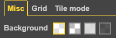
Now click the Grid tab and set:Grid tab Setting Enable grid Ticked Grid size First square (thinnest lines) Grid spacing First square (a line around every pixel) Grid color Pink (bottom row, fourth square), or any bright colour that is not one of your runner's colours.  Thin lines appear on the canvas, one square per pixel. Click the gear again to close the panel.
Thin lines appear on the canvas, one square per pixel. Click the gear again to close the panel. - Quick on/off button. Once the grid is set up, you can hide or show it without opening Settings. Move your mouse to the top of the Preview window (top-right corner, just under the Create Sprite button). Three small buttons appear. They stay hidden until the mouse is over them.
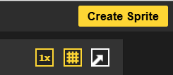
The middle one, #, turns the grid off and on. Click it twice to try it, and leave the grid on.
Part 2 · Draw frame 1: facing right
You draw the runner facing right: cap brim and nose on the right, backpack on the left. Copy the pictures square by square. The numbers along the top and side count the pixels from 0, so you can find your place.

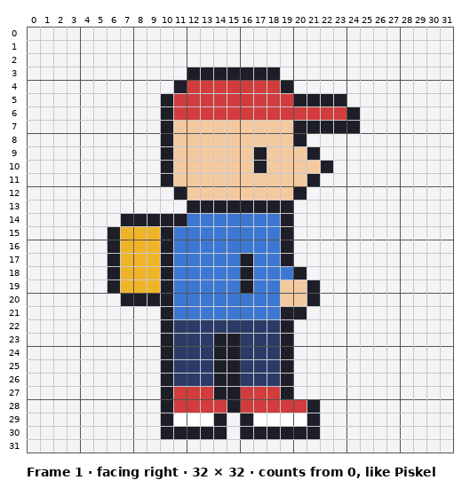
| Part of the runner | Colour code | Quick notes |
|---|---|---|
| Outline, eye | #1E1E28 (almost black) | Pen, copy the outline grid (2A) |
| Cap and shoes | #D23C3C (red) | Stroke rows 4, 5, 6 (cap) · rows 27, 28 (shoes) |
| Shoe soles | #FFFFFF (white) | Stroke row 29, two short lines |
| Pants | #2B3A67 (dark blue) | Stroke row 22 · (fill) Bucket, each leg |
| Skin | #F5C9A0 (light tan) | Pen hand, 4 pixels · (fill) Bucket, face |
| Shirt | #3C78D2 (blue) | (fill) Bucket, body |
| Backpack | #F0B428 (yellow) | (fill) Bucket, inside the pack |
How to pick a colour: click the big primary colour square (far left, under the tools). It starts black. The checkered square behind it is the secondary colour (see-through to start), and the curved arrow swaps the two. A colour chooser opens.
A colour chooser opens.
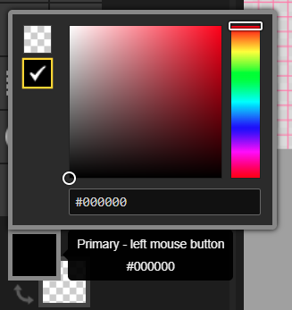
Click in the text box at the bottom (it shows #000000 at first), delete what is there, type the colour code (or click any code on this page to copy it, then paste with Ctrl+V) (for example #1E1E28) and press Enter, then click back on the canvas to close the chooser. The primary square changes to that colour. The primary colour paints with the left mouse button.Tip: the eyedropper just above the colour squares copies a colour already on your canvas. Click the eyedropper, then click a pixel, and the primary square changes to that colour. It is handy for going back to a colour you used earlier.
2A · Outline
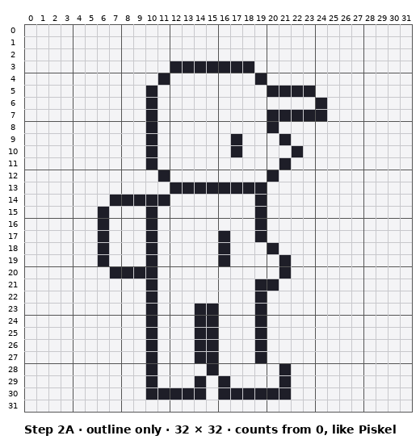
- Choose the Pen tool (far left, top of the tools). Above the tools, check the Pen size is the smallest square (1 pixel). The one in use has a yellow outline.

- Pick the outline colour #1E1E28.
- Copy every dark square from the outline picture: the cap and its brim, the head with the nose bump, the eye (2 pixels on column 17, rows 9 and 10), the backpack, the body with the arm line on column 16, the two legs and the shoes.
- Made a mistake? Right-click a pixel to erase it, or press Ctrl+Z to undo.
2B · Parts that touch each other
Some coloured parts sit right against each other with no outline between them: the cap and the face, the shoes and the pants, the hand and the shirt. The Paint bucket would pour straight from one into the other, so draw these with the Stroke tool first. Then the bucket fills in 2C stay inside their own areas.
| Colour | Row | From column | To column |
|---|---|---|---|
| #D23C3C cap | 4 | 12 | 18 |
| 5 | 11 | 19 | |
| 6 | 11 | 23 (the brim) | |
| #D23C3C shoes | 27 | 11 and 16 | 13 and 18 |
| 28 | 11 and 16 | 14 and 20 | |
| #FFFFFF soles | 29 | 11 and 17 | 13 and 20 |
| #2B3A67 pants | 22 | 11 | 18 |
| #F5C9A0 hand (Pen) | 19 and 20 | 19 | 20 |
- Pick #D23C3C and choose the Stroke tool
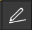
(a pen drawing a straight line). - Hold Shift and drag along row 4 from column 12 to column 18. Let go. A straight red line appears. Do the same for row 5 (columns 11 to 19) and row 6 (columns 11 to 23). The cap is red, with the brim sticking out to the right.
- Still red: draw the shoes. Row 27: columns 11 to 13, then 16 to 18. Row 28: columns 11 to 14, then 16 to 20. The front shoe is longer, pointing right.
- Pick #FFFFFF and draw the soles on row 29: columns 11 to 13, then 17 to 20.
- Pick #2B3A67 and draw the top of the pants on row 22, columns 11 to 18.
- Pick #F5C9A0, switch to the Pen , and click the 4 hand pixels: columns 19 and 20 on rows 19 and 20.
2C · Fill the big areas
- Choose the Paint bucket tool
 (the tipping paint can). Keep #F5C9A0 and click inside the face. The face and nose turn light tan.
(the tipping paint can). Keep #F5C9A0 and click inside the face. The face and nose turn light tan. - Pick #3C78D2 and click inside the body. The shirt and sleeve turn blue.
- Pick #F0B428 and click inside the backpack. It turns yellow.
- Pick #2B3A67 and click inside each leg (two clicks: one leg each).
- If a colour spills out over the whole background or into another part, press Ctrl+Z. Look for a gap in the outline or a missing pixel from 2B and fix it with the Pen.
Part 3 · Frame 2: facing left
You don't redraw the runner facing left. You copy frame 1 and flip the copy, like a mirror.
3A · Copy frame 1
How to duplicate a frame: in the Frames column (left side, between the tools and the canvas), hold your mouse over the frame. Small icons appear in its corners:
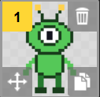
- Bottom-right, Duplicate
 (two overlapping pages): makes a copy.
(two overlapping pages): makes a copy. - Bottom-left, move handle (four-way arrow): drag it up or down to change the frame order.
- Top-right, bin: deletes the frame.
Click the Duplicate icon  . A copy appears just below it and opens on the canvas.
. A copy appears just below it and opens on the canvas.
Frame 2 looks exactly like frame 1 for now. That's expected.
3B · Flip it
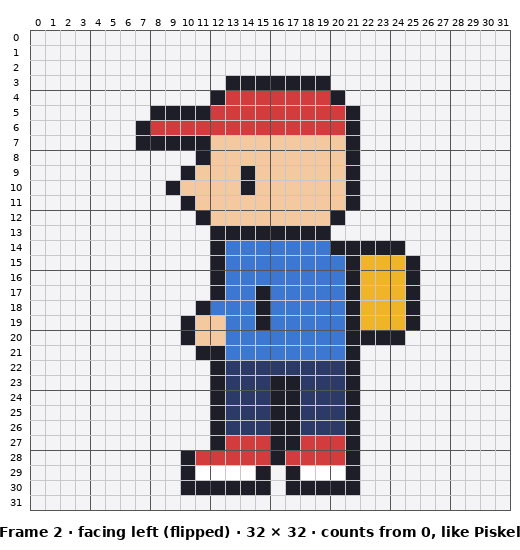
- Check frame 2 is the one selected in the Frames column (it has a yellow outline).
- Find the Transform panel on the right side, under the Layers panel.
- Hold the mouse over the first button in the Transform panel (a triangle beside its mirror image). Its name pops up: Flip horizontally.
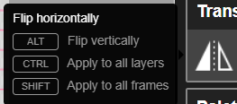
- Click it, without holding any keys. The runner on the canvas turns around: the cap brim and nose now point left and the backpack is on the right.
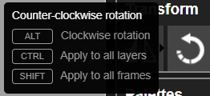
Make sure frame 2 is selected first. If the wrong thing flips, press Ctrl+Z and try again.3C · Watch it turn
- Look at the Preview window (top-right). It plays the two frames over and over.
- Drag the speed slider under the Preview down to about 2 FPS. The runner turns right, then left, then right again.
Part 4 · Save and export
You make two files: a .piskel file so you can keep editing later, and a sprite sheet PNG with both frames side by side, ready for a game.
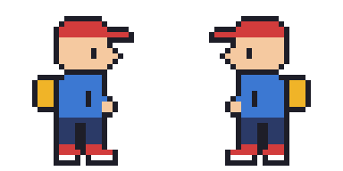
4A · Save your work
- Click the Save icon (strip on the far right edge, under Resize). A panel slides out.
- Type runner in Title.
- Under Save offline as file, click the yellow Save as .piskel button. A file called runner.piskel downloads (check your Downloads folder).
4B · Export the sprite sheet
| Export → PNG | Value |
|---|---|
| Scale | 1 (leave it) |
| Columns | 2 |
| Rows | 1 |
- Click the Export icon
 (far right edge, under Save). A panel slides out with tabs along the top: GIF, PNG, Zip, Others.
(far right edge, under Save). A panel slides out with tabs along the top: GIF, PNG, Zip, Others. - Click the PNG tab.
- Set Columns to 2 and Rows to 1.
- Under Spritesheet file export, click Download. A PNG downloads. Open it: you see the runner facing right, then facing left, 64 pixels wide and 32 tall.
4C · Hand in
- Upload runner.piskel and the sprite sheet PNG to Google Classroom (classroom.google.com).
- Next: in Construct 3 (editor.construct.net), the sheet comes in as one sprite with 2 frames (right-click the frames panel → Import Frames → From Sheet, Columns 2, Rows 1, Width and Height 32). Frame 0 faces right and frame 1 faces left.